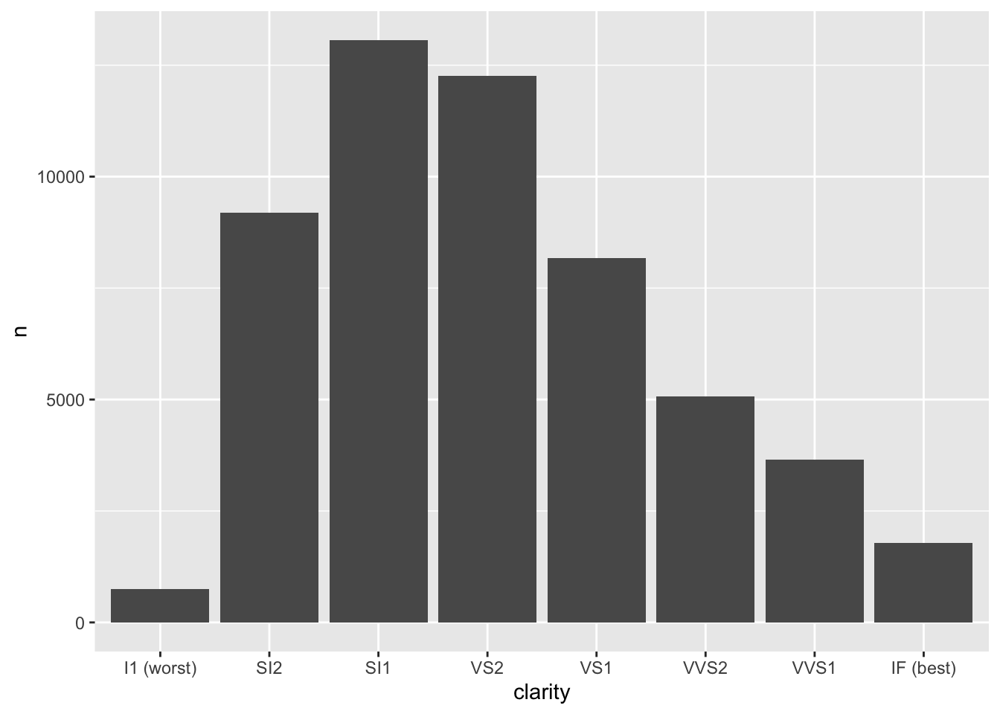
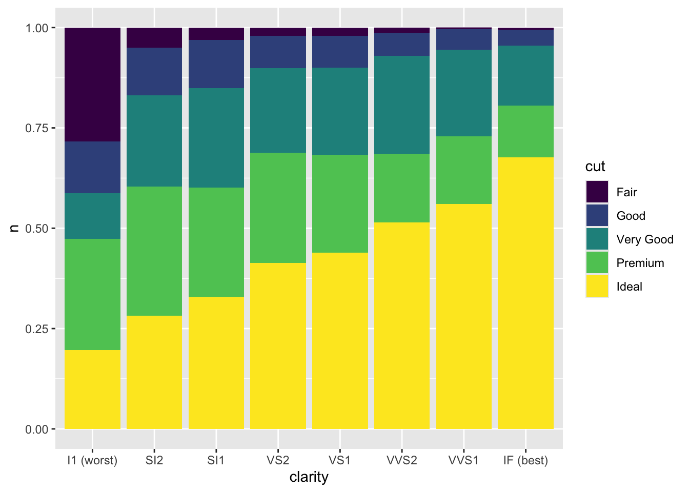
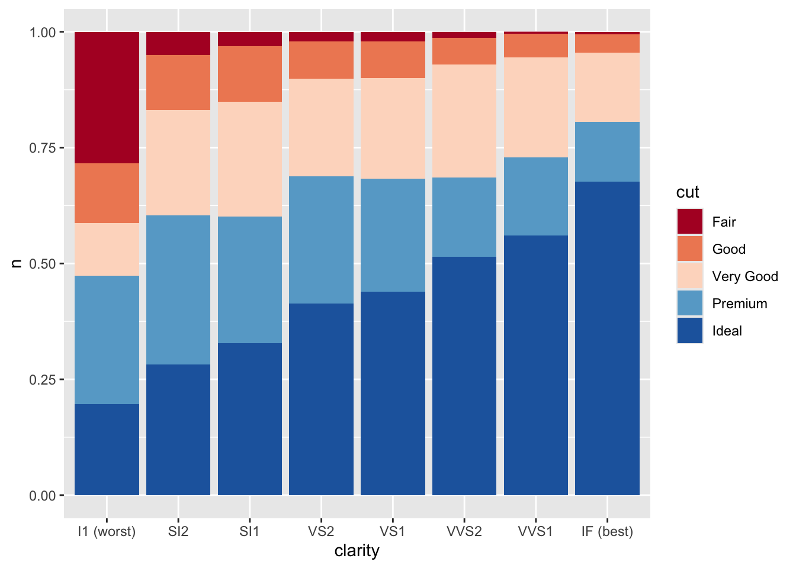
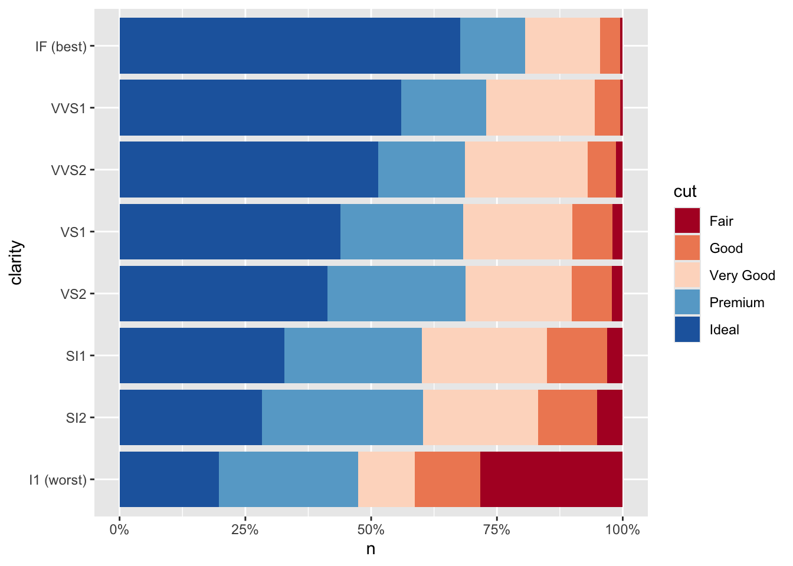
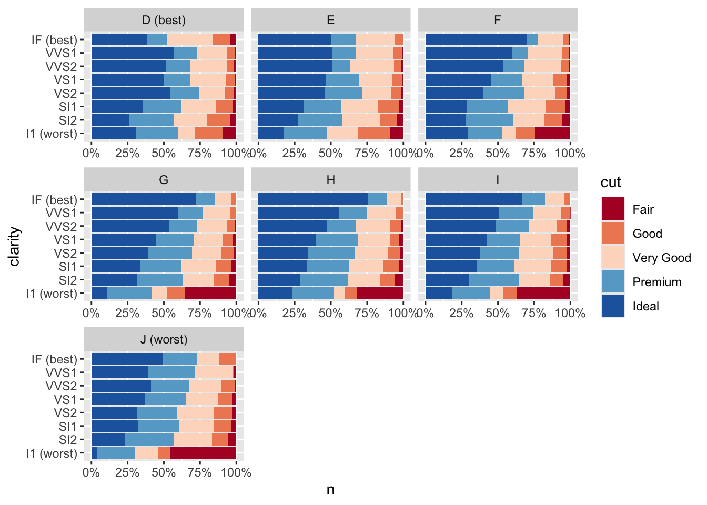
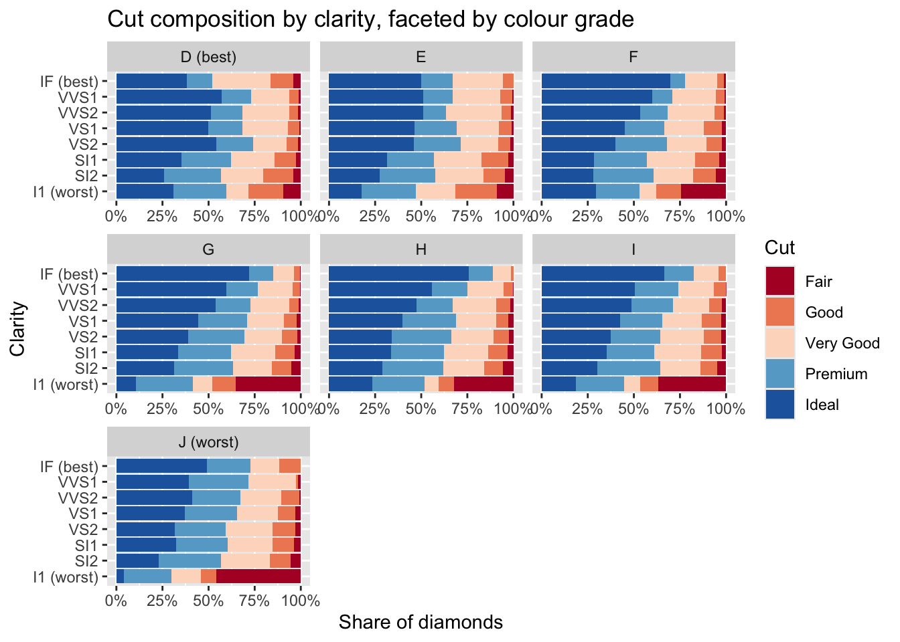
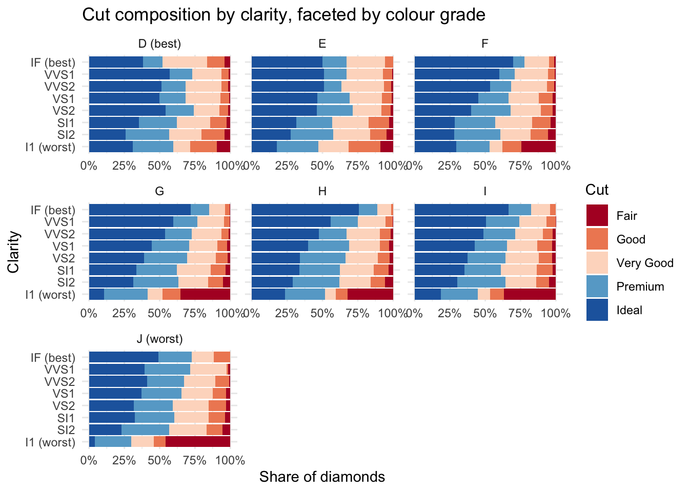
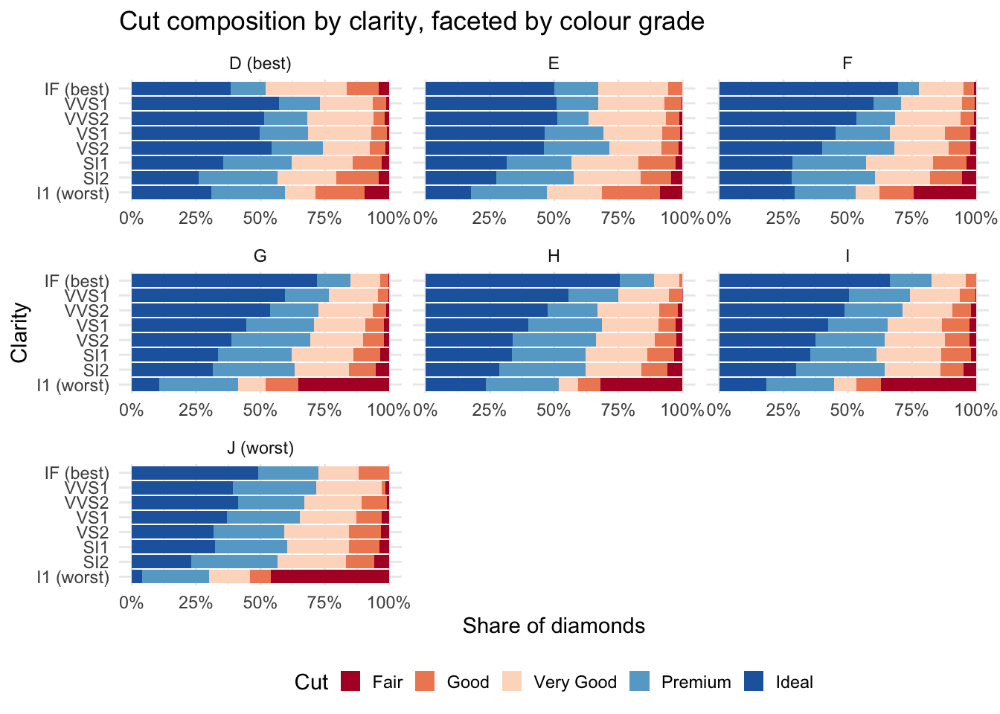
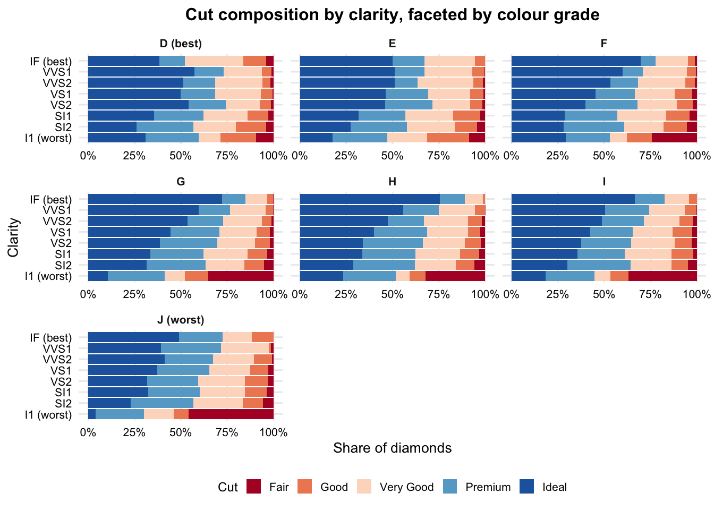

library(tidyverse)
library(scales)4 Layering a plot, stage by stage
The skeleton in the intro chapter shows the full anatomy of a ggplot call at once. This chapter rebuilds it one layer at a time on a single running example — diamonds (built into ggplot2) — so the effect of each addition is visible on its own before the next one goes on.
The question: how does the mix of cut quality within each clarity grade change, and does that composition differ by colour grade? This is a share question, not a volume one — and that shapes several of the choices made from stage 2 onward.
4.0.1 The data
diamonds is ~54,000 round-cut diamonds with price and nine physical/quality attributes. Three of those are the ones in play here, and all three are graded, ordered categories rather than arbitrary labels:
cut— quality of the cut: Fair (worst), Good, Very Good, Premium, Ideal (best)color— diamond colour grade: D (best, colourless) through J (worst, most visible tint)clarity— how free of inclusions the stone is: I1 (worst) through IF (best, internally flawless)
None of these are things you’d normally sum or average directly — they’re categorical groupings, which is exactly the shape of variable a bar chart is for. diamonds_summary collapses the ~54,000 individual diamonds down to one row per combination of the three, with n giving the count of diamonds in each — that’s what gets plotted throughout, not the raw data.
Neither clarity nor color reads as obviously ordered from its labels alone — nothing about “I1” or “D” tells a viewer which end is best. Rather than fixing that with scale/labeller code at every plotting stage, it’s simplest to relabel the two extreme levels once, in the data, before any plot is built — fct_recode() renames a factor level without disturbing its position in the level order, so every chart from here on inherits the tagged labels automatically.
diamonds_summary <- diamonds %>%
count(clarity, cut, color) %>%
mutate(
clarity = fct_recode(clarity, "I1 (worst)" = "I1", "IF (best)" = "IF"),
color = fct_recode(color, "D (best)" = "D", "J (worst)" = "J")
)4.0.2 1. Create plot
Just x and y mapped, default geom settings. With no fill mapped, geom_col’s default position = "stack" silently collapses the cut/color breakdown into one bar per clarity grade — this is the total count per clarity. It’s a real number, but it doesn’t answer the actual question: it says nothing about how the mix of cut quality shifts from one clarity grade to the next, since clarity grades have wildly different total volumes to begin with.
plot <- ggplot(diamonds_summary, aes(x = clarity, y = n)) +
geom_col()
plot
4.0.3 2. fill colour
fill = cut is mapped — it varies by row, splitting each bar into its cut segments. But comparing segment sizes across bars only works if every bar is the same total height — otherwise a clarity grade with more diamonds overall will always look like it has “more” of every cut, regardless of the actual mix. position = "fill" rescales every bar to 100%, so segment proportions become directly comparable across clarity grades.
Confusingly, “fill” means two different things in this one call: aes(fill = cut) is the aesthetic being coloured by; position = "fill" is the position adjustment that rescales and stacks. Same word, unrelated arguments.
plot <- ggplot(diamonds_summary, aes(x = clarity, y = n, fill = cut)) +
geom_col(position = "fill")
plot
The composition story is already visible here in a way stage 1 couldn’t show: better clarity grades visibly carry a larger share of Ideal/Premium cuts.
4.0.4 3. Colour palette
Swapping ggplot’s default hue palette for a deliberate one.
cut_palette <- c(
"Fair" = "#b2182b",
"Good" = "#ef8a62",
"Very Good" = "#fddbc7",
"Premium" = "#67a9cf",
"Ideal" = "#2166ac"
)
plot <- plot + scale_fill_manual(values = cut_palette)
plot
4.0.5 4. Axis scale
The y-axis is a proportion now (0 to 1), not a raw count — scales::comma is the right tool for large counts, but it’s the wrong one here. scales::percent matches what the axis actually represents.
plot <- plot + scale_y_continuous(labels = percent)
plot4.0.6 5. Axis flip
clarity’s labels are short enough to survive on a vertical axis here, but this is the point in the build where you’d reach for coord_flip() if they weren’t — horizontal bars, category labels read left to right instead of rotated.
plot <- plot + coord_flip()
plot
4.0.7 6. Add facets
Splitting into one panel per colour grade answers the second half of the original question directly: does the cut composition pattern seen above hold across colour grades, or does it shift? The “(best)”/“(worst)” tags on the two extreme colour grades — baked into the data up front — carry straight through to the facet strip labels here with no extra code.
plot <- plot + facet_wrap(~ color, scales = "free_x")
plot 
The gotcha worth flagging separately: after coord_flip(), free_x/free_y in facet_wrap() swap meaning. Facet scales are evaluated on the physical, post-flip axes — not on the original x/y aesthetic roles the way theme elements are. Since the share axis (n, rescaled by position = "fill") now renders horizontally, it’s scales = "free_x" that frees it per panel, not "free_y" — easy to get backwards.
4.0.8 7. Label plot
plot <- plot +
labs(
title = "Cut composition by clarity, faceted by colour grade",
x = "Clarity",
y = "Share of diamonds",
fill = "Cut"
)
plot
4.0.9 8. Theme
Non-data styling, applied last, in three passes rather than one jump.
8a — base theme. Swap ggplot’s default grey panel for a plain one.
plot <- plot + theme_minimal()
plot
8b — legend placement and sizing. Seven facets and five cut categories already crowd the plot — move the legend below and shrink the keys so it doesn’t compete with the panels.
plot <- plot +
theme(
legend.position = "bottom",
legend.key.size = unit(0.4, "cm")
)
plot
8c — text sizing and gridline cleanup. The export-ready pass: consistent text sizes across every text element, minor gridlines dropped, facet strip labels tidied.
plot <- plot +
theme(
legend.position = "bottom",
legend.key.size = unit(0.4, "cm"),
legend.text = element_text(size = 8),
legend.title = element_text(size = 9),
axis.text = element_text(size = 8, colour = "black"),
axis.title = element_text(size = 10),
plot.title = element_text(size = 12, face = "bold", hjust = 0.5),
strip.text = element_text(size = 8, face = "bold"),
panel.grid.minor = element_blank()
)
plot
4.0.10 Putting it all together
The same chart, all stages combined into the one call you’d actually write:
ggplot(diamonds_summary, aes(x = clarity, y = n, fill = cut)) +
# geom: fill mapped (varies by cut). position = "fill" rescales each bar
# to 100% so cut composition is comparable across clarity grades,
# regardless of their total volume
geom_col(position = "fill") +
# scale: deliberate palette + percent-formatted shares (not comma —
# this axis is a proportion, not a count)
scale_fill_manual(values = cut_palette) +
scale_y_continuous(labels = percent) +
# coord: horizontal bars
coord_flip() +
# facet: one panel per colour grade — free_x, not free_y, since coord_flip
# already swapped which physical axis carries the share
facet_wrap(~ color, scales = "free_x") +
labs(
title = "Cut composition by clarity, faceted by colour grade",
x = "Clarity",
y = "Share of diamonds",
fill = "Cut"
) +
# theme: base, then legend, then the export-ready text/gridline pass
theme_minimal() +
theme(
legend.position = "bottom",
legend.key.size = unit(0.4, "cm"),
legend.text = element_text(size = 8),
legend.title = element_text(size = 9),
axis.text = element_text(size = 8, colour = "black"),
axis.title = element_text(size = 10),
plot.title = element_text(size = 12, face = "bold", hjust = 0.5),
strip.text = element_text(size = 8, face = "bold"),
panel.grid.minor = element_blank()
)